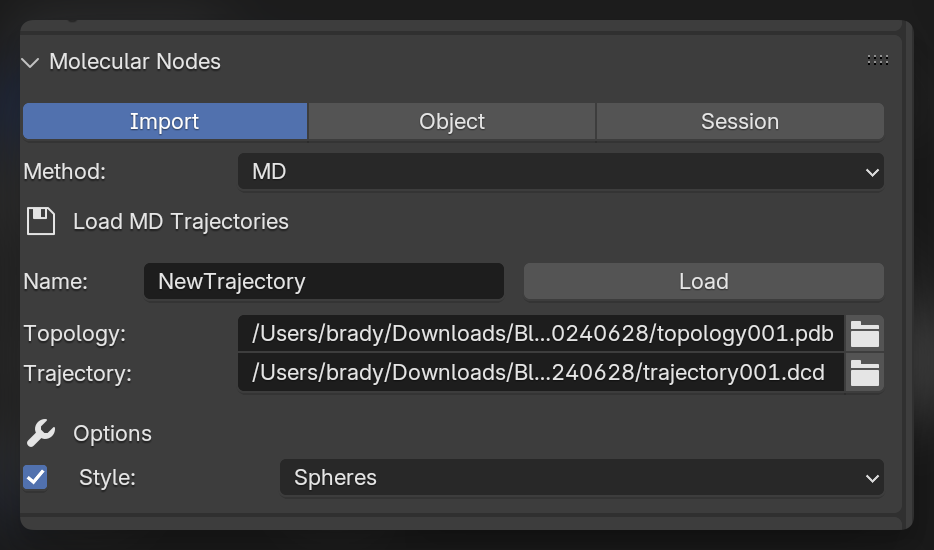
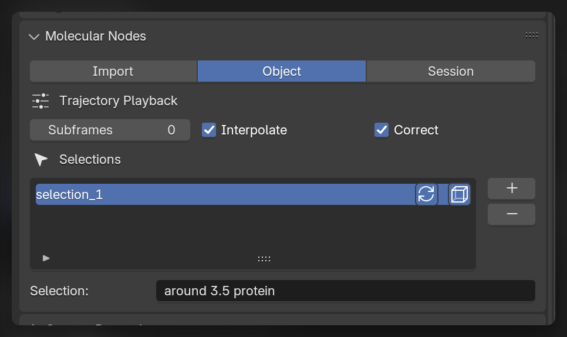

Trajectories
Importing Molecular Dynamics data
As well as importing static structures, the results from molecular dynamics simulations can be imported as models in to Blender. This is enabled through the excellent package MDAnalysis. The imported structure will have an object created that will act as the topology file, and a connection is maintained the underlying MDAnalysis.Universe object that provides coordinates and allows for dynamic calculations to be performed during playback.
When saving the .blend file, a corresponding .MNSession file will be saved next to your Blender file. When reloading the file, the MDAnalysis.Universe will be reloaded from this file, so ensure you keep it next to the .blend file.
MD Trajectory Panel
To import trajectories, change the import method in the Molecular Nodes panel to the MD method. To import a trajectory, select the topology and trajectory files. You can choose the initial starting style, but this can easily be changed after import.

Import the Trajectory
Click Load to import the selected trajectory with the chosen options. The model will appear in the scene, and when the Frame changes inside of Blender, the corresponding frame will be displayed from the imported trajectory.
Changing Style
To change which style is displayed, you have to interact with the Geometry Nodes,you use the same Geometry Nodes tree that you use for other structures. Adding new style nodes and specifying their selections to limit limit the style to particular selections of atoms.
Subframes
By default each frame on Blender’s timeline corresponds to the frame in the imported trajectory. You can increase the Subframes number for this trajectory, and the selected number of frames will be created in between the frames of the loaded trajectory. If Interpolate is selected, the positions will be linearly interpolated between the frames of the trajectory. If subframes are used, the frames of the trajectory will no longer directly correspond to the frames inside of Blender. With 2 subframes, frame 9 inside of Blender will correspond frame 3 of the trajectory.
When linearly interpolating through subframes of a trajectory, we can correct for periodic boundary crossing with the Correct option enabled. This is only available if your simulation box is cubic.
Custom Selections
Creating selections through nodes is a very quick and powerful way of working. It can be easier to create selections through text, and some niche selections are currently unable to created through the node system.
With Trajectory object selected, in the Object tab in the molecular nodes panel, we can create custom selections using the MDAnalysis selection language. These selections will become available inside of the Geometry Nodes tree as a Named Attribute.
There are toggles for these selections to be updating and / or periodic in how they are calculated. These options correspond directly to the options that are possible through the MDAnalysis.Universe.select_atoms() method for creating atom groups.
Use the Named Attribute or Select Attribute nodes to get access to these selections inside of Geometry Nodes, and use them to selectively apply styles, colors and animations to your trajectory.

Creating the Animation
To replicate the animation which we see at the top of the tutorial, we can use some of the example datasets which are provided alongside MDAnalysis with the MDAnalysisData package. To download one of the datasets, use the code below:
# pip install MDAnalysisData
from MDAnalysisData import datasets
datasets.fetch_adk_transitions_FRODA()Loading the Trajectory
We will load the trajectory, and load all of the frame sin to memory to ensure we can make a smoother trajectory.
In the video below we have imported the trajectory, and we can adjust the number of frames in the scene, as well as the number of frames the trajectory will play back over. We also enabled EEVEE atoms to display in the EEVEE render engine.
Changing Styles
We can change the style of the imported trajectory, by adding a new style node. We can combine styles with the Join Geometry. For more details on adding styles, see the importing tutorial.
We can apply the atoms style, only to the side chains of the protein, by using the Backbone selection node, and using the is_side_chain output. This selectively applies the style to only those atoms in the selection. The combined styles now contain only the atoms for the side chains and a continuous ribbon for the protein.
Setting the Scene
We can set up the scene a bit nicer with a backdrop. In this case we create a plane using Shift + A to add a plane, go in to edit mode and extrude the backbdrop up with the E key. We can create a slightly curved corner by bevelling the corner. Select the two vertices of the edge and click Ctrl + B. Move the mouse and use the scroll wheel to adjust the settings, then left click to apply.
Rendering the Animation
We can change some final settings of the style, do a test Render Image, change the export settings for where the frames of the animation are going to be saved, then we can click Render Animation to render all of the frames of the animation.